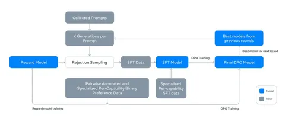

Возвращаемся к LlaMA 3.1 и продолжаем разбираться, как она устроена. В этот раз речь пойдёт об алайменте модели.
По сравнению с LLaMA 2 у третьей версии изменилась разметка пар. Помимо стандартных chosen и rejected добавилась ещё метка edited. Она ставится в тех случаях, когда победивший объект не слишком хорош и его переписывают. Ответы оцениваются по семибалльной шкале.
SFT происходит в шесть раундов. Если в LLaMA 2 использовался PPO, то в LlaMA 3 — DPO. Разработчики отмечают, что это связано с тем, что PPO требует больше вычислительных ресурсов, а качество выходит хуже.
Ещё одно важное отличие — это специализация. На претрейне модель доучивают для решения специальных задач. Потом делают отдельный алаймент, полученную специализированную модель используют для генерации новых обучающих данных стадии алайнмента, а также мержат веса нескольких специализированных модель в единую модель.
Reward-модель обучается над претрейном. Margin term, который был в Llama 2, в третьей версии отсутствует, так как, по словам разработчиков, он не даёт никакого прироста в качестве. Как и в DPO, оставляют только те ответы, которые помечены как «сильно лучше» и «лучше». Кроме того, в reward-модели есть отдельные награды для полезности и безопасности.
За один раунд SFT 405B-модель суммарно проходит 576 тысяч сэмплов. В DPO используют сэмплы от моделей с последних раундов (а в reward-модели — все). Служебные токены, такие как EOS или токены для вызовов функций, маскируют для стабилизации обучения. Кроме того, к DPO добавляют NLL (CE) с коэффициентом 0,2. Это нужно, чтобы повысить вероятность chosen-ответов. Промпты для обучения пишут люди, а ответы — модели. На один промпт выбирают лучший ответ из 10-30 поступивших.
В LlaMA 3.1 есть четыре уровня фильтрации данных:
1. Rule-based — удаляет дисклеймеры, смайлики и восклицания;
2. Quality — качественными считаются 25% ответов с наибольшим скором. Кроме того, используется LLM-as-judge. Ответы оцениваются по трём критериям для обычных данных и двум — для кодинга. Ответ считается качественным, если все критерии выполнены. Сэмпл попадает в обучение, если хотя бы один из методов показал, что ответ качественный;
3. Difficulty — оценивается по числу интентов в запросе: чем их больше, тем сложнее запрос. Также модель оценивает сложность по трёхбальной шкале;
4. SemDedup — этот метод используется для удаления похожих данных, при отборе отдается предпочтение семплам с максимальным значением quality * difficulty.
Алаймент для каждой из функциональных возможностей (Capabilities) LLaMA 3.1 имеет свои особенности. Например, в коде есть много синтетических данных, используется execution feedback и перевод на редкие языки программирования. А для математики берут тексты из претрейна и уже к ним генерируют инстракты.
Что касается фактологичности, то разработчики не добавляют новых знаний поверх претрейна. Для этого модель обучают отвечать только на те вопросы, на которые она может выдать ответ, согласованный с документом из претрейна. А для чувствительных тем, по которым в датасете много некорректной информации, используют ручную разметку.
Разбор подготовил
Душный NLP
